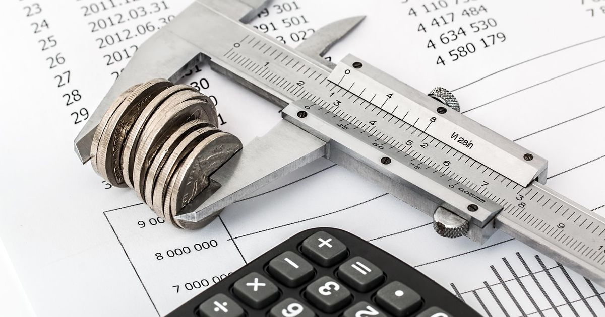

How Much Does a Small Business Website Cost in US?

Key takeaways
- A basic website can start around $1,500, while a custom solution may exceed $10,000.
- Hosting, domain, and maintenance are recurring costs you must budget for.
- Choosing a one‑time license model can reduce long‑term expenses, similar to POS licensing strategies.
- Backups to familiar tools (Gmail, WhatsApp) can save money on premium cloud services.
Many owners wonder exactly how much a small business website will cost in the US before they start. The answer depends on design, functionality, hosting, and ongoing maintenance.
This guide breaks down each cost component, shows where you can save, and offers a realistic budget range for a professional, conversion‑focused site.
Understanding the Core Cost Components
Understanding the Core Cost Components
When budgeting for a small‑business website in the US, break the total into distinct line items. Each component influences the overall price and the long‑term viability of the site.
- Domain name – The address (e.g., yourshop.com) is a yearly expense. A .com typically costs $10‑$15 per year; premium or industry‑specific TLDs can range $30‑$100.
- Hosting – This is the server space where files live. Shared hosting starts around $5‑$10 / month, while managed WordPress or VPS solutions run $20‑$50 / month. E‑commerce sites often need a more robust plan, $30‑$80 / month.
- Design – Visual layout, branding, and user‑experience work. A custom design from a freelancer may be $500‑$2,000; a premium template plus minor tweaks can stay under $500.
- Development – Turning the design into functional code, integrating forms, carts, or POS links. Basic static sites cost $300‑$800; dynamic sites with e‑commerce or custom integrations range $1,500‑$5,000.
- Content – Text, images, product listings, and videos. Professional copywriting averages $50‑$150 per page; stock imagery $1‑$5 per image, while custom photography can exceed $200.
- SEO (Search Engine Optimization) – On‑page optimization, keyword research, and basic link building. Initial SEO setup often falls between $300‑$1,000, with monthly retainers $100‑$300 for ongoing work.
- Maintenance – Updates, security patches, backups, and minor tweaks. Expect $50‑$150 / month for a small site; larger e‑commerce platforms may require $200‑$400 / month.
Why each matters:
- Domain and hosting keep the site reachable; a reliable host reduces downtime and protects SEO.
- Design shapes first impressions; a professional look improves conversion rates.
- Development ensures functionality; bugs or slow load times hurt user experience and search rankings.
- Content drives engagement and informs search engines; quality copy and images boost credibility.
- SEO makes the site discoverable; without it, even the best site may stay hidden.
- Maintenance preserves security and performance; neglect leads to vulnerabilities and higher long‑term costs.
By listing these components and assigning realistic price ranges, small‑business owners can create a transparent budget and avoid surprise expenses later.
Domain and Hosting: What to Expect
Domain and Hosting: What to Expect
Securing a memorable .com domain and a reliable hosting environment are the first financial items on any small‑business website budget. While the numbers are modest compared with design or development fees, they recur annually or monthly and directly affect site speed, uptime, and security.
Domain name costs
- Standard .com registration: $10‑$15 USD per year from major registrars (e.g., GoDaddy, Namecheap, Google Domains).
- Premium or short‑keyword domains: $50‑$500 USD per year, depending on market demand.
- Renewal fees are often slightly higher than the first‑year price; budget for a 10‑15 % increase after the initial term.
Hosting options
| Hosting type | Typical price (USD) | Best for |
|---|---|---|
| Shared hosting | $3‑$10 / month | Very small sites, low traffic (under 10,000 visits/month) |
| VPS (Virtual Private Server) | $20‑$60 / month | Growing businesses, moderate traffic, need for custom server settings |
| Managed WordPress/Cloud hosting | $25‑$100 / month | Businesses that want performance and security handled by the host |
Shared hosting is the cheapest entry point, but it places your site on a server with dozens of other sites, which can lead to slower load times during traffic spikes. VPS isolates your resources, offering consistent performance and the ability to install custom software—important for POS integrations or specialized plugins.
Checklist for choosing a reliable host
- Uptime guarantee ≥ 99.9 % (look for independent monitoring reports).
- SSD storage rather than HDD for faster file access.
- Free SSL/TLS certificate included.
- Scalable plans that allow easy upgrades from shared to VPS.
- Responsive support (24/7 chat or phone) with a reputation for quick issue resolution.
- Backup options: daily automated backups at no extra cost.
For most small businesses, starting with a reputable shared host (e.g., SiteGround, Bluehost, or A2 Hosting) and budgeting $5‑$10 per month works well. As traffic grows or you add e‑commerce features, transition to a VPS in the $30‑$50 range to maintain speed and security without a major cost jump.
Remember to factor both the initial registration fee and the ongoing renewal cost for the domain, plus the monthly or annual hosting fee, into your overall website budget.
Design & Development Costs
Design & Development Costs
When you plan a small‑business website, the biggest variable is how the site is built. Two broad paths exist: using a template‑based builder (Wix, Squarespace, Shopify, WordPress.com) or commissioning a custom design from a freelancer or agency. The choice determines both the upfront spend and the ongoing effort required to keep the site fresh.
Template‑based builders provide drag‑and‑drop editors, pre‑made layouts, and hosted infrastructure. They are ideal for owners who want a functional site in days rather than weeks. Typical costs include:
- Platform subscription: $12‑$40 / month (often billed annually).
- Premium theme or add‑on apps: $50‑$200 one‑time.
- Basic setup assistance (optional): $100‑$300 one‑time.
Overall, a DIY builder can land you a professional‑looking site for $300‑$800 in the first year.
Custom design & development involves hiring a professional to craft a unique UI, write clean code, and integrate any needed functionality (e‑commerce, booking, POS integration, etc.). Cost brackets are:
- Freelancers: $1,500‑$4,000 for a 5‑10 page site, plus $50‑$150 / hour for extra features.
- Mid‑size agencies: $4,500‑$12,000 for a fully custom design, with project management and QA included.
- High‑end boutique firms: $12,000‑$30,000+ for complex integrations, brand‑centric design systems, and post‑launch support.
Remember that custom work also requires ongoing maintenance, which is usually billed separately.
| Provider | Initial Cost (USD) | Typical Timeline | Maintenance Model |
|---|---|---|---|
| DIY Builder (Wix, Squarespace) | $300‑$800 | 1‑2 weeks | Included in subscription |
| Freelancer | $1,500‑$4,000 | 3‑6 weeks | Hourly or retainer |
| Agency | $4,500‑$12,000 | 6‑12 weeks | Monthly retainers |
**Checklist for choosing a path**:
- Define required features (e‑commerce, POS sync, booking).
- Set a realistic budget ceiling.
- Assess your willingness to manage content yourself.
- Consider long‑term maintenance costs alongside the initial spend.
Content Creation and SEO
Content Creation and SEO
High‑quality copy, relevant images, and basic on‑page SEO are the three pillars that turn a functional site into a marketing asset. While the technical build of a small business website can be budgeted, the ongoing cost of content creation often surprises owners because it is not a one‑time expense.
Copywriting budget
- Professional freelance copywriters typically charge $0.10‑$0.30 per word for web‑focused content. For a standard five‑page site (Home, About, Services, Blog, Contact) with 500‑800 words per page, expect a total of $250‑$720.
- Package rates are common: a flat fee of $300‑$500 for a complete set of core pages, including revisions.
- For businesses on a tighter budget, using a skilled in‑house staff member or a junior freelancer at $15‑$25 per hour can reduce costs, but expect longer turnaround times.
Image sourcing budget
- Free stock photo libraries such as Unsplash, Pexels, and Pixabay provide high‑resolution images at no cost. The trade‑off is limited brand specificity.
- Premium micro‑stock sites (e.g., Shutterstock, iStock) sell single images for $5‑$15 each. A typical site uses 10‑15 images, costing $50‑$225.
- Commissioning custom photography ensures unique visuals that match brand tone. Small local photographers often charge $100‑$300 for a half‑day shoot, which can be amortized over multiple pages and marketing materials.
Basic on‑page SEO budget
- Keyword research tools (e.g., Ubersuggest, Ahrefs Lite) cost $0‑$99 per month. Free tools can provide a solid starting point for low‑competition terms.
- On‑page optimization (title tags, meta descriptions, header hierarchy, image alt text) typically requires 2‑4 hours of work at $30‑$60 per hour, amounting to $60‑$240.
- SEO plugins for popular CMS platforms (Yoast SEO, Rank Math) have free versions that cover the basics; premium upgrades add schema and advanced analytics for $30‑$80 per year.
In practice, a realistic budget for content creation and baseline SEO on a small business website ranges from $400 to $1,200, depending on the mix of free versus paid assets and the level of professional writing required. Investing in quality copy and images pays off through higher engagement, better search rankings, and a stronger brand impression, which ultimately supports the overall ROI of the site.
Ongoing Maintenance and Updates
Ongoing Maintenance and Updates
Even after a website launches, the cost does not stop. Regular maintenance protects the site from security threats, keeps software compatible, and ensures a smooth user experience. Most small‑business owners should expect a recurring budget that reflects both the technical work and any third‑party licenses required.
Typical recurring line items
- Software updates: Core CMS (WordPress, Shopify, etc.) and theme updates usually occur monthly. A developer or managed‑service provider may charge $50‑$150 per hour; many small businesses allocate $75‑$200 per month for this work.
- Security patches: Vulnerability scans, firewall rules, and malware removal can cost $30‑$100 per month when outsourced. Some hosting plans bundle basic security, but dedicated services often add $20‑$50 extra.
- Plugin / extension licenses: Premium plugins (e.g., SEO tools, e‑commerce carts, booking systems) are commonly sold on a yearly basis. Prices range from $30 to $200 per plugin per year. A typical setup might involve 2‑3 paid plugins, totaling $100‑$400 annually.
- Backup services: Automated daily backups with off‑site storage are essential. Providers charge $5‑$20 per month depending on storage volume.
Budget guideline
A practical rule of thumb is to allocate 10‑15 % of the initial website cost for ongoing maintenance. For example, if the launch budget was $5,000, set aside $500‑$750 per year ($40‑$63 per month). This range comfortably covers the items above and leaves room for occasional redesign tweaks or new feature integrations.
Sample maintenance plan checklist
- Schedule monthly core and plugin updates.
- Run a quarterly security audit and apply any patches.
- Renew plugin licenses before expiration to avoid functionality loss.
- Verify backup integrity weekly and test restore procedures semi‑annually.
- Review site performance metrics (load time, uptime) and address any bottlenecks.
By treating maintenance as a predictable expense rather than an after‑thought, small business owners protect their online investment and avoid costly emergency fixes later.
Licensing Models: One‑Time vs. Subscription
Licensing Models: One‑Time vs. Subscription
When you buy a website you face the same choice I faced building POS systems for shops in Saudi Arabia, the UAE and Pakistan: pay once and own it, or subscribe month‑by‑month. Both have merit, but the right fit depends on how you run your business and how tolerant you are of downtime.
One‑time license
- Predictable cost: You pay a lump sum—usually $1,200‑$3,000 for a small‑business site with a custom theme and basic e‑commerce. No surprise invoices later.
- Offline resilience: My POS licences keep shops selling even when the license server goes down. The software simply runs locally until the server is reachable again. A website on a one‑time licence can be hosted on a cheap shared server or even a local VM, so if the internet fails the site stays reachable on the LAN.
- Long‑term ownership: You control updates. If you want a new feature, you can commission it without waiting for a subscription renewal.
- Up‑front cash‑flow hit: Small owners must have the money ready, which can be a barrier.
Subscription licence
- Lower entry price: Plans start around $15‑$30 per month, covering hosting, security patches and basic support.
- Always‑up‑to‑date: The provider pushes new themes, plugins and security fixes automatically.
- Scalable services: Add a blog, a booking widget or a multilingual layer without buying a new version.
- Dependency on provider: If the subscription lapses or the provider’s servers go down, the site can become inaccessible—something I saw when cheap POS competitors lost their license servers.
From my experience, shop owners in Saudi Arabia and the UAE overwhelmingly prefer the one‑time model because cheap competitors sell that way and the guarantee of selling even when the internet drops is priceless. In Pakistan, a hybrid works: a one‑time core licence plus optional monthly add‑ons for tax modules or extra storage.
"I built a full POS system sold as one version, no tiers, and it kept running when the license server was offline – that reliability is what I look for in a website licence too."
Practical checklist
- Calculate your cash‑flow: can you afford a $2,500 upfront fee?
- Check hosting reliability: will a shared host survive an internet outage?
- Identify needed add‑ons: e‑commerce, multilingual support, SEO tools.
- Match the model to your risk tolerance: prefer certainty (one‑time) or flexibility (subscription)?
Backup Strategies for Small Business Websites
Backup Strategies for Small Business Websites
When the author built POS systems for retailers across Saudi Arabia, the UAE and Pakistan, the most reliable safety net was never a fancy SaaS dashboard – it was a simple Gmail or WhatsApp message sent at the end of each day. The same mindset works for a small‑business website. You don’t need an expensive enterprise backup service; you need a process that fits the owner’s comfort level and the hardware they already have.
Why cheap, familiar tools work
- Gmail: Every shop already has a Google account for email. Set up an automatic forward of your website’s database dump (e.g., a .sql file) to a dedicated Gmail address. Google stores the attachment for 30 days, and you can label it for easy retrieval.
- WhatsApp: In many of the stores I served, the owner would send a quick "backup done" note to his own number with the file attached. WhatsApp keeps media for 30 days and is instantly accessible on any phone.
- Google Drive: Link the same dump to a shared Drive folder. The free tier gives you 15 GB – more than enough for weekly backups of a modest site. Enable "offline" access so the file is still viewable if the internet drops.
Step‑by‑step checklist
- Export your website’s database (MySQL, PostgreSQL, etc.) at least once a day. Most hosting panels have a one‑click export.
- Compress the file (zip) and rename it with the date, e.g., site‑backup‑2024‑11‑15.zip.
- Email the file to a dedicated Gmail address. Add a label like "Website Backups".
- Send the same file to your own WhatsApp number using the "Share" option on your phone.
- Upload the file to a Google Drive folder set to "Anyone with the link can view" for quick recovery.
- Rotate: keep the last 7 daily backups, then a weekly snapshot, and a monthly archive. Delete older files to stay within free storage limits.
Typical cost for this DIY approach is essentially zero – you only pay for the existing internet plan. If you prefer a slightly more automated route, low‑cost plugins (around $15‑$30 USD per year) can schedule the export and email it automatically.
Built a full POS system for retail shops and restaurants in Saudi Arabia, the UAE and Pakistan, sold as one full version (no feature tiers).
By mirroring the backup habits of shop owners who already trust Gmail and WhatsApp for their POS data, you get a cheap, reliable safety net for your website without adding complexity or monthly fees.
Putting It All Together: Sample Budget
Putting It All Together: Sample Budget
Below is a realistic, line‑item budget for a typical U.S. small‑business website that combines the cost components covered in earlier sections. All figures are approximate and presented in U.S. dollars; actual prices will vary based on location, vendor, and specific project scope.
| Item | Typical Range | Example Cost |
|---|---|---|
| Domain registration (annual) | $10 – $20 | $12 |
| Shared hosting (annual) | $60 – $120 | $80 |
| Website theme/template | $0 – $150 (premium) | $100 |
| Custom design & development | $1,500 – $5,000 | $2,800 |
| Content creation (copy, images) | $300 – $1,200 | $600 |
| Basic SEO setup | $200 – $800 | $400 |
| Monthly maintenance (updates, security) | $50 – $150 per month | $100/mo (≈ $1,200/yr) |
| Backup service (annual) | $50 – $150 | $100 |
| Licensing (CMS plugins, stock assets) | $0 – $300 | $150 |
| Total First‑Year Cost | $6,542 |
**How to use this budget**
- Identify which rows apply to your project. A simple brochure‑style site may skip custom development and SEO, reducing the total.
- Adjust the example cost column to reflect quotes you receive. Keep the ranges as a sanity check.
- Separate one‑time expenses (design, development, licensing) from recurring costs (hosting, maintenance, backups). This helps you forecast cash flow for the first year and beyond.
- Allocate a contingency buffer of 10‑15 % for unexpected tweaks or additional content.
By laying out the numbers side‑by‑side, small‑business owners can see where the biggest investments lie—typically the custom design/development and ongoing maintenance. Prioritizing essential features first and scaling up later keeps the initial outlay manageable while ensuring the site remains secure and functional over time.
Frequently asked questions
Can I build a professional website for under $2,000?
Yes, using a high‑quality template and a DIY builder can keep costs low, but you may sacrifice custom features and unique branding.
What hidden costs should I watch out for?
Hidden costs include premium plugins, SSL certificates, ongoing SEO services, and emergency support after launch.
Is a one‑time license better than a subscription for a website?
A one‑time license eliminates recurring fees and, like my POS systems, ensures the site stays functional even if the vendor’s server goes down.
How often should I back up my website?
At least weekly backups are recommended; many owners back up to Gmail or WhatsApp for easy, familiar access.
Do I need a professional developer for e‑commerce features?
For basic e‑commerce, a builder with integrated store tools can suffice, but complex inventory or tax rules often require a developer.
Need a POS system, website or app for your business?
I build affordable custom POS software, business websites and mobile apps for shops and restaurants worldwide.
Get a free quote